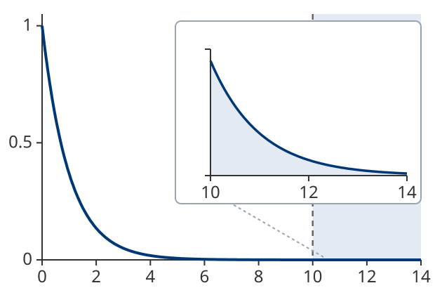
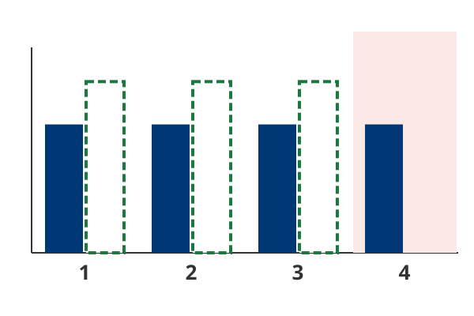
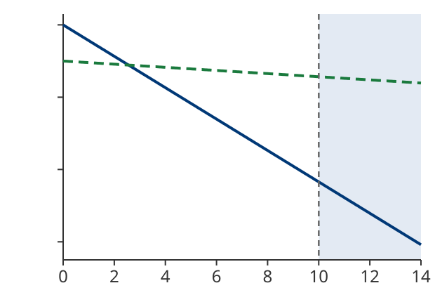
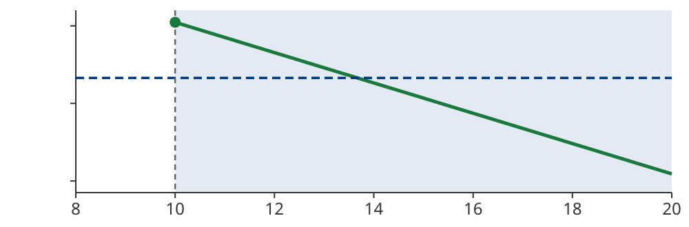
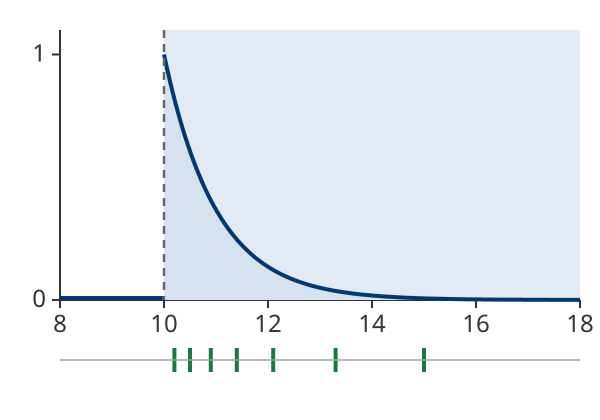
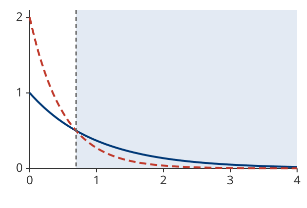

Monte Carlo &
Importance Sampling
When you can't integrate — sample
Albert No · Yonsei University
Fall 2026
Contents
Why Sampling?
Integrals that never close
Three Expectations Nobody Can Compute
Bayesian posterior
$\int \tilde{p}(\theta)\, d\theta$ over $\mathbb{R}^d$
$d$ in the millions
Expected return (RL)
$\mathbb{E}[R(\tau)]$ over trajectories $\tau$
every action sequence
LM output reward
$\mathbb{E}[r(X)]$ over token sequences
$|\mathcal{V}|^{T}$ outcomes
All the same object: $\mathbb{E}_p[f(X)]$ — and none closes
The Idea — Integration by Averaging
Draw from $p$, evaluate $f$, average:
- The LLN says the average converges
- Concentration says how fast
The Dartboard
Estimate: $\hat{\pi} = 4 \cdot \tfrac{4}{6} = \tfrac{8}{3} \approx 2.67$ — noisy at $n = 6$, as it should be
Definition — the Monte Carlo Estimator
Definition (Monte Carlo estimator). For $X_1, \dots, X_n \stackrel{\text{i.i.d.}}{\sim} p$:
- Exactly the sample mean $\bar{Y}_n$ with $Y_i = f(X_i)$
- Everything we proved about sample means applies verbatim
What Unbiasedness Buys
- No systematic error to correct — all error is noise
- Averaging independent runs keeps the target fixed
- MSE = variance — the bias term is zero
Contrast coming: a useful estimator that is not unbiased
RMSE — the Error Yardstick
Recall: $\text{MSE} = \text{Bias}^2 + \mathrm{Var}$. Here bias $= 0$:
- Typical error shrinks like $1/\sqrt{n}$
- $10\times$ more accuracy costs $100\times$ more samples
[S114 placeholder] Estimating the Error Bar
[S115 placeholder] Approximate Intervals, Exact Guarantees
Accuracy Guarantee II — Hoeffding
If additionally $f(x) \in [a,b]$ for all $x$:
Inverted: error $\leq \epsilon$ with confidence $1 - \delta$ once
The Remarkable Absence
Let $X \in \mathbb{R}^d$ — any $d$. Theorem 2 still reads:
- The dimension $d$ appears nowhere
- The proof never touched the domain — only $Y_i = f(X_i)$, a scalar
Caveat kept for later: $\sigma_f$ itself can grow with $d$
Error vs. Work — the Picture
Grid slope $-2/d$ flattens as $d$ grows; MC's $-\tfrac12$ never moves
[S116 placeholder] Rare Events Need Relative Error
Importance Sampling
Sample from $q$, correct by weights
Most Draws Miss the Tail
Target $X \sim \mathrm{Exp}(1)$, rate $1$:
$p(x) = e^{-x}$ on $x \geq 0$
Integrand $f(x) = \mathbf{1}\{x \gt 10\}$
About $1$ draw in $22{,}026$ lands in the event
Known answer: a benchmark for estimators

$p(x) = e^{-x}$ $x$ event tail zoom $5{\cdot}10^{-5}$ area $e^{-10}$gen/p9b_figs.pyA Rare Event Needs Many Samples
Indicator mean $\mu$: relative RMSE of $n$ ordinary draws
$10\%$ relative RMSE: ordinary MC needs $n \geq 2{,}202{,}547$
A spread target: not a $95\%$ guarantee, not a runtime
Visit Useful Outcomes More Often
Proposal $q$: a new sampler that changes where draws land
 $p$: none past $10$
$q$: many past $10$
event $x \gt 10$
$p$: none past $10$
$q$: many past $10$
event $x \gt 10$
Same $p$, $f$, $\mu$: the target does not move
Plain average of $f$ under $q$ estimates $\mathbb{E}_q[f]$, not $\mu$
Correct Each Visit's Weight
Target on top, proposal below
$q$ under-visits $x$: $w(x) \gt 1$
$q$ over-visits $x$: $w(x) \lt 1$
Continuous $x$: a density ratio, not a probability
 $w = 2$
$w = 1.2$
$w = 0.4$
■ $p$
▢ $q$ (dashed)
$w = 2$
$w = 1.2$
$w = 0.4$
■ $p$
▢ $q$ (dashed)
Importance Sampling Preserves the Target
Theorem (importance-sampling identity).
Assume $\mathbb{E}_p|f(X)| \lt \infty$ and $q(x) \gt 0$ wherever $f(x)\,p(x) \neq 0$ (except a null set).
With $w = p/q$ on $\{q \gt 0\}$:
Ordinary IS also needs $p/q$ computable at each draw
Equal means only: says nothing about variance
Proof: Cancel the Proposal
Draws from $q$ land in $\{q \gt 0\}$ with probability $1$
Domain still $\{q \gt 0\}$: the region $\{q = 0\}$ is not yet counted
$\mathbb{E}_p|f| \lt \infty$: every integral here converges absolutely
Proof (continued): Check the Missing Region
So far: $\mathbb{E}_q[fw] = \int_{\{q \gt 0\}} f p\,dx$. Split the full integral:
Only $fp$ must vanish there: $p \gt 0$ is allowed where $f = 0$
Missing Support Cannot Be Repaired
$p$ uniform on $\{1,2,3,4\}$, $f = \mathbf{1}\{x = 4\}$:
target $\mu = 1/4$
$q$ uniform on $\{1,2,3\}$, so $q(4) = 0$
Each draw: $w = 3/4$ and $f = 0$
More draws cannot help: state $4$ is never visited

$1/4$ $1/3$ $q = 0$ $f = 1$ only here ■ $p$ ▢ $q$ (dashed)Average the Weighted Integrand
Unbiased under the identity's conditions: $\mathbb{E}[\hat{\mu}_{\mathrm{IS}}] = \mathbb{E}_q[fw] = \mu$
Divide by $n$, not by the sum of weights
Extra cost over plain MC: evaluate $p$ and $q$
A Practical Exponential Proposal
Target $p = \mathrm{Exp}(1)$; same event $x \gt 10$
Proposal $q = \mathrm{Exp}(0.1)$, a heavier tail:
Both positive on all $x \geq 0$: support covered
Normalizer known: no unknown $\mu$ inside $q$
Rate $0.1$: an illustrative choice, not optimal

$1$ $10^{-2}$ $10^{-4}$ $10^{-6}$ $p = \mathrm{Exp}(1)$ $q = \mathrm{Exp}(0.1)$ $x$ eventgen/p9b_figs.pyMore Tail Visits, Corrected Weights
About $8{,}100\times$ more tail hits than $p$
$f w = 0$ below $10$; above, it varies with $x$
More hits alone: not proof of lower variance

$10^{-3}$ $10^{-5}$ $10^{-7}$ $\mu = e^{-10}$ $f w = 10\,e^{-0.9x}$ $x$gen/p9b_calc.py, gen/p9b_figs.pyCompute the Proposal's Error
One draw's second moment, $q = \mathrm{Exp}(\lambda)$: finite only for $0 \lt \lambda \lt 2$
Relative variance per draw: $14.3067 - 1 \approx 13.3067$
Same Target, Less Relative Error
Draws needed for relative RMSE $\leq 0.1$, same $\mu = e^{-10}$
 ordinary MC
IS, $q = \mathrm{Exp}(0.1)$
$2{,}202{,}547$
$1{,}331$
$1$
$10^{2}$
$10^{4}$
$10^{6}$
ordinary MC
IS, $q = \mathrm{Exp}(0.1)$
$2{,}202{,}547$
$1{,}331$
$1$
$10^{2}$
$10^{4}$
$10^{6}$
$n = \lceil \text{relative variance} / 0.01 \rceil$: $\;22{,}025.5 \to 2{,}202{,}547$; $\;13.31 \to 1{,}331$
Exact-formula calculation, not measured runtime; neither is a $95\%$ guarantee
gen/p9b_calc.pyCoverage and Variance Are Different
1 · Validity
$q \gt 0$ wherever $fp \neq 0$
gives: unbiased, same $\mu$
$\mathrm{Exp}(0.1)$: positive on all $x \geq 0$ ✓
2 · Precision
$\int f^2 p^2 / q$ finite and small
gives: small RMSE per draw
$\mathrm{Exp}(0.1)$: relative variance $13.3$ vs $22{,}025$ ✓
Valid ≠ useful: a covering $q$ can have larger, even infinite, variance
The Variance of IS
The proposal decides everything
The Second Moment Decides
$\hat{\mu}_{\mathrm{IS}}$ is a sample mean of $Y = fw$ under $q$:
Valid when the integral is finite
Infinite integral: infinite variance, no finite RMSE
The criterion has $f^2$ in it: weights alone do not decide
Follow the Weighted Integrand
$f^2 p^2/q$ is large where $|f|p$ is big, $q$ small
So aim $q$ at $|f|\,p$, not at $p$
Absolute value: a density is never negative
Illustration: $p = \mathcal{N}(0,1)$, $f(x) = x$
Intuition here, not yet an optimality proof
 $p$
$|f|\,p$
$f p$ (signed)
$|f|p = 0$ at $x = 0$
$x$
$p$
$|f|\,p$
$f p$ (signed)
$|f|p = 0$ at $x = 0$
$x$
gen/p9b_figs.pyThe Optimal Proposal
Theorem (optimal proposal).
Let $c = \mathbb{E}_p|f(X)| \in (0, \infty)$. Among densities $q$ with $q \gt 0$ wherever $fp \neq 0$, the per-draw variance $\mathrm{Var}_q(fw)$ is minimized by
With $n$ draws: $\mathrm{Var}(\hat{\mu}_{\mathrm{IS}}) = (c^2 - \mu^2)/n$; any sign of $f$
A formula, not yet a usable sampler: $q^*$ contains $c$
Proof: A Common Lower Bound
Recall. $\mathbb{E}[Z^2] \geq (\mathbb{E}Z)^2$, equality iff $Z$ is a.s. constant
Take $Z = |f(X)|\,w(X)$ with $X \sim q$:
$|f|p \neq 0$ exactly where $fp \neq 0$: same coverage
Same floor for every admissible $q$; equality iff $|f|w$ constant $q$-a.s.
Proof (continued): Attain the Bound
Floor: $\mathbb{E}_q[(fw)^2] \geq c^2$ for every admissible $q$. Now plug in $q^*$:
Sign of $f$ may flip; the magnitude stays $c$
$q^*$ is a density: $\int |f|p/c = 1$; zero only where $fp = 0$
One-Sign Integrands Permit Zero Variance
Indicator $f \geq 0$: $c = \mu = e^{-10}$
Each draw: $f w^* = e^{-10}$ exactly, so variance $0$
Oracle benchmark: built from the known answer
Sign-changing $f$: usually $c^2 - \mu^2 \gt 0$

$q^*(x) = e^{-(x-10)}$ $x$ each draw: $f w^* = e^{-10}$gen/p9b_figs.pyThe Oracle Needs a Normalizer
unknown target
on $x \gt 10$
↺ the weight needs $c$, and $c$ is the answer
Two different capabilities: sample $q^*$, or evaluate its normalized weight
Here the tail is known: $X = 10 + \mathrm{Exp}(1)$ samples $q^*$, and $c = e^{-10}$ is computable
Harder problems: $c$ unknown, so $w^*$ cannot be evaluated
Light Tails Can Destroy Variance
New integrand $f(x) = x$; $p = \mathrm{Exp}(1)$, $\mu = 1$
Proposal $q = \mathrm{Exp}(2)$: $q(x) = 2e^{-2x}$
Both positive on $x \geq 0$: identity valid
Growing weights: a warning, not yet a proof

$q = \mathrm{Exp}(2)$ $p = \mathrm{Exp}(1)$ $\ln 2$ $q \lt p$ beyond $\ln 2$: tail under-visited $x$gen/p9b_figs.pyA Finite Mean, an Infinite Second Moment
$f(x) = x$, $p = \mathrm{Exp}(1)$, $q = \mathrm{Exp}(2)$, $w = e^{x}/2$:
Mean: the cancellation leaves $e^{-x}$. Square: it leaves no decay
Unbiased, yet $\mathrm{Var} = \infty$: RMSE is infinite at every $n$
Consistency Is Not an Error Bar
Same estimator: $Y_i = X_i\,w(X_i)$ iid under $q = \mathrm{Exp}(2)$
Converges, but the usual finite-variance error tools do not apply
A calm batch, or a small sample variance, does not prove a finite second moment
Check the Integrand, Not Just Weights
Same $f(x) = x$, $p = \mathrm{Exp}(1)$; heavier proposal $q = \mathrm{Exp}(\tfrac12)$:
Variance per draw $\tfrac{32}{27} - 1 = \tfrac{5}{27}$, vs $1$ for ordinary MC
Criterion: $\int f^2 p^2 / q \lt \infty$. Bare $\mathbb{E}_q[w^2] = \tfrac43$ is a different number
Heavier tails: a heuristic, not a guarantee for every $f$
Self-Normalized IS
Unknown constants cancel
The Missing Constant
Bayesian posterior: $p(x) = \tilde{p}(x) / Z$
- $\tilde{p}$ = prior $\times$ likelihood: computable at any $x$
- $Z = \int \tilde{p}$: the impossible integral we started with
- True weight $w = p/q$ needs $Z$ — stuck?
Unnormalized Weights
Define what we can compute:
- Off from the true weight by the same factor $Z$, every sample
- A ratio of weighted sums would cancel it…
Definition — Self-Normalized IS
Definition (self-normalized IS, SNIS). For $X_i \stackrel{\text{i.i.d.}}{\sim} q$, with $q \gt 0$ wherever $\tilde{p} \gt 0$:
- Replace $\tilde{w}$ by $c\, \tilde{w}$: $c$ cancels top and bottom — $Z$-free ✓
- Needs $0 \lt \mathbb{E}_q[\tilde{w}] = Z \lt \infty$ and $\mathbb{E}_q\big[|\tilde{w} f|\big] \lt \infty$
Two MC Estimators, One Ratio
Divide both sums by $n$ and look at each piece (Theorem 1 under $q$):
- Numerator: IS estimator of $Z\mu$; denominator: of $Z$
- Both convergences: LLN
Consistency — Sketch
- Top and bottom converge (LLN); the ratio follows
- Flagged sketch: "ratio of limits" uses the continuous-mapping step, named not proved
- Needs both limits finite and $Z \gt 0$ — the definition’s hypotheses
Honest Flag — SNIS Is Biased
Expectations do not pass through ratios: $\mathbb{E}\!\left[ \tfrac{A}{B} \right] \neq \tfrac{\mathbb{E}[A]}{\mathbb{E}[B]}$
Mini-example: $A = 1$, $B$ uniform on $\{1, 3\}$:
SNIS: biased at finite $n$, consistent as $n \to \infty$ — the price of dropping $Z$
[S122 placeholder] Normalization Does Not Guarantee Improvement
Weight Degeneracy — the Picture
Weights $(0.1,\ 0.2,\ 0.1,\ 0.1,\ 9.5)$: one sample carries $95\%$ of the estimate
Effective Sample Size — a Heuristic
Definition (effective sample size, ESS). For weights $\tilde{w}_1, \dots, \tilde{w}_n$:
- Scale-invariant: $c\,\tilde{w}$ leaves it unchanged — fits SNIS
- Heuristic, not a theorem: a diagnostic, not a guarantee
What ESS Is Not
- Not a variance bound — ignores $f$ entirely
- Can look healthy while a heavy tail hides unseen huge weights
- Standard reading: $n_{\text{eff}} \ll n$ means fix the proposal
Cheap, universal, imperfect — the field's favorite dashboard light
Where SNIS Runs in AI
Posterior inference
$Z$ unknown by construction
Particle filters
Reweight, resample, repeat
name only
Off-policy evaluation
Judge a new policy on old data
later today
Next: the missing third upgrade — gradients
The Score-Function Gradient
Differentiate through sampling
A New Kind of Problem
Policy / generator $\pi_\theta$: a distribution we control through $\theta$
- RL: $X$ = trajectory, $R$ = return
- LM: $X$ = generated text, $R$ = reward score
To climb, we need $\nabla_\theta J$ — and $J$ is already un-computable
Why Plain MC Doesn't Give a Gradient
- $\theta$ lives inside the sampler, not inside $R$
- MC on samples estimates $J(\theta)$ at one $\theta$ — a number
- $R(X_i)$ carries no $\tfrac{\partial}{\partial \theta}$ to average
Needed: rewrite $\nabla_\theta\, \mathbb{E}_{\pi_\theta}[\cdot]$ as $\mathbb{E}_{\pi_\theta}[\,\cdot\,]$ of something — then sample it.
[S123 placeholder] A Gaussian Sample Is a Recipe
[S124 placeholder] Differentiate Along the Sampling Path
[S125 placeholder] Check the Gaussian Gradient
[S126 placeholder] Discrete Draws Need Another Route
Technique Review — the Log-Derivative Trick
Chain rule on $\log$, read backwards:
- Turns a bare $\nabla \pi_\theta$ into $\pi_\theta \times (\text{something})$
- A $\pi_\theta$ factor is exactly what an expectation needs
Theorem 5 — the Score-Function Identity
Theorem 5 (score-function / REINFORCE identity).
Finite $\mathcal{X}$, $\pi_\theta(x) \gt 0$, differentiable in $\theta$; $R$ fixed. Then:
$\nabla_\theta \log \pi_\theta(x)$: the score — hence the name
Proof Step 1 — Expand the Expectation
- $R(x)$: fixed numbers — all $\theta$-dependence sits in $\pi_\theta$
- Finitely many terms, each differentiable in $\theta$
Proof Step 2 — Swap $\nabla$ and $\sum$
- Finite sums: differentiate term by term — automatic
- Honest flag: continuous $\mathcal{X}$ needs an interchange condition (dominated convergence — name only)
Proof Step 3 — Log-Derivative, Then Reread
The inserted $\pi_\theta$ is what lets us read the sum as an expectation again
The REINFORCE Estimator
Theorem 5 + Theorem 1: sample and average the new integrand
- Unbiased estimate of $\nabla_\theta J$ — then gradient ascent
- Needs: sampling $\pi_\theta$, evaluating $R$, differentiating $\log \pi_\theta$
Worked Check — a Two-Action Policy
Actions $\{a, b\}$; policy $\pi_\theta(a) = \sigma(\theta)$ (sigmoid); rewards $R(a) = 1$, $R(b) = 0$
Direct route — here $J$ is computable:
Sigmoid derivative $\sigma' = \sigma(1 - \sigma)$ — the yardstick to match
Worked Check — the Identity Agrees
Scores: $\nabla \log \sigma(\theta) = 1 - \sigma$; $\nabla \log (1 - \sigma(\theta)) = -\sigma$
At $\theta = 0$: both sides $= \tfrac12 \cdot \tfrac12 = \tfrac14$
Baselines — Free Variance Reduction
Lemma (baseline invariance). The score has mean zero, so for any constant $b$:
Proof of mean-zero score:
[S96b placeholder] A Valid Baseline Preserves the Gradient
Baseline at Work — the Toy, Revisited
Two-action policy at $\theta = 0$; single-sample gradient estimates:
| sample | no baseline | baseline $b = \tfrac12$ |
|---|---|---|
| $a$ (prob $\tfrac12$) | $1 \cdot \tfrac12 = \tfrac12$ | $\tfrac12 \cdot \tfrac12 = \tfrac14$ |
| $b$ (prob $\tfrac12$) | $0 \cdot (-\tfrac12) = 0$ | $(-\tfrac12)(-\tfrac12) = \tfrac14$ |
| mean / variance | $\tfrac14$ / $\tfrac{1}{16}$ | $\tfrac14$ / $\mathbf{0}$ |
Same mean, variance killed — the estimator became constant
[S127 placeholder] A Bad Baseline Adds Variance
[S128 placeholder] Two Gradient Estimators, Different Requirements
Off-Policy & RLHF
Old samples, new policy
The Off-Policy Problem
- Samples on disk: drawn from $\pi_{b}$ — yesterday's policy, logged data
- Wanted: expectations under today's $\pi_\theta$
- Fresh samples per update: one full generation each — expensive
Reusing stale samples for a new distribution — we own this tool now
Old Samples, New Policy — It's Theorem 3
IS identity with target $\pi_\theta$, proposal $\pi_b$:
- Weights: ratio of the two policies at the logged sample
- Support condition: $\pi_b$ must cover everything $\pi_\theta$ can do
Sequences Multiply Weights
Chain rule of probability on a length-$T$ sequence:
- One modest ratio per token — $T$ of them, multiplied
- Small drifts compound into giant or vanishing weights
Degeneracy Grows With Length
Caricature: independent tokens, each with $\mathbb{E}[w_t^2] = 1.1$:
- ESS heuristic $n_{\text{eff}} \approx n / \mathbb{E}[w^2]$: $10^6$ samples $\to$ $n_{\text{eff}} \approx 73$
- Each factor $\geq 1$ always ($\mathbb{E}[w_t] = 1$ + Jensen) — growth is the rule
[S129 placeholder] Behavior and Reference Are Different Roles
Recall — KL Divergence
Recall (KL divergence). For distributions $P, Q$:
- Proved earlier via Jensen
- Note: it is the mean log-weight under $P$ — today's objects again
The RLHF-Shaped Objective
Reward-tune a language model $\pi_\theta$ without losing the reference $\pi_{\text{ref}}$:
- First term: differentiated by Theorem 5 (with a baseline), estimated by MC
- $r$ from human preferences — a learned, black-box reward
- Second term: KL leash — stay near the reference model
- $\beta$: the dial between reward chasing and drift
Scope: the schematic objective family — no claims about any specific algorithm
Keep the Ratio Near One
- Lesson: off-policy weights are safe only while $\pi_\theta \approx \pi_b$
- Practical methods constrain the per-step ratio (clipping, trust regions — names only)
- Needed: a principled meter for "how far has $\pi_\theta$ drifted?"
We built exactly that meter already…
Recap — Every Tool, One Job
| Tool | What it delivered |
|---|---|
| MC estimator (Thm 1–2) | unbiased, RMSE $\sigma_f/\sqrt{n}$, any $d$ |
| IS identity (Thm 3) | any sampler $q$, exact accounting |
| optimal proposal (Thm 4) | floor $c^2 - \mu^2$, zero for one-sign $f$ — aim at $|f| p$ |
| SNIS + ESS | unknown $Z$; biased-but-consistent; diagnostics |
| score identity (Thm 5) | gradients through sampling + baselines |
One engine (LLN + variance accounting) + one move (multiply-and-divide)
Questions?